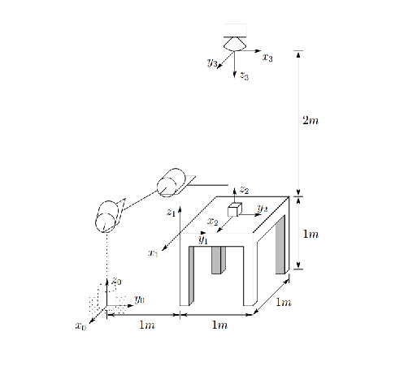
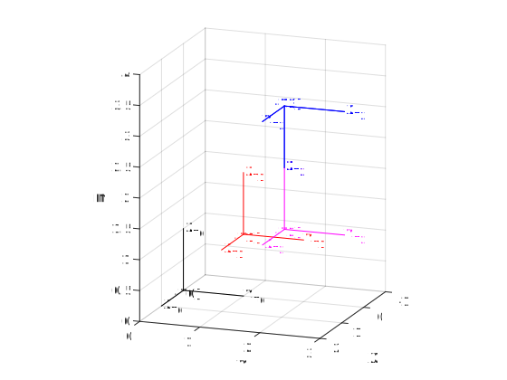

Assignment 3
Contents
The problem
Consider the diagram of Figure 2.16. A robot is set up 1 meter from a table. The table top is 1 meter high and 1 meter square. A frame o1x1y1z1 is fixed to the edge of the table as shown. A cube measuring 20 cm on side is placed in the center of the table with frame o2x2y2z2 established at the center of the cube as shown. A camera is situated directly above the center of the block 2m above the table top with frame o3x3y3z3 attached as shown.
- Find the homogeneous transformations relating each of these frames to the base frame o0x0y0z0
- Find the homogeneous transformation relating the frame o2x2y2z2 to the camera frame o3x3y3z3
- Given p0 = [0; 1; 1]. Find p1, p2, and p3
- Write the Matlab code to solve this problem and convert any point from frame 0 to the anther frames and Draw frames in Matlab.
Base frame
T0=trotx(0); trplot(T0,'frame','T0','color','k') axis([-1 2 0 3 0 4]) view(110,15) hold on
Homogeneous transformation from T0 to T1
H01=transl(0,1,1) tranimate(H01,'frame','T1','color','r') hold on
H01 =
1 0 0 0
0 1 0 1
0 0 1 1
0 0 0 1
Homogeneous transformation from T0 to T2
H02=transl(-0.5,1.5,1) tranimate(H02,'frame','T2','color','m') hold on
H02 =
1.0000 0 0 -0.5000
0 1.0000 0 1.5000
0 0 1.0000 1.0000
0 0 0 1.0000
Homogeneous transformation from T0 to T3
H03=transl(-0.5,1.5,3)*trotz(pi/2)*trotx(pi) tranimate(H03,'frame','T3','color','b') hold on
H03 =
0.0000 1.0000 0.0000 -0.5000
1.0000 -0.0000 -0.0000 1.5000
0 0.0000 -1.0000 3.0000
0 0 0 1.0000
Homogeneous transformation from T2 to T3
H32=H03\H02 tranimate(H02,H03,'frame','T3','color','b')
H32 =
0.0000 1.0000 0 0
1.0000 -0.0000 0.0000 -0.0000
0.0000 -0.0000 -1.0000 2.0000
0 0 0 1.0000

Convert any point p0 to p1, p2, or p3
p0=[0 1 1]'
plotp(p0,'*k')
p1=H01\[p0;1]
p2=H02\[p0;1]
p3=H03\[p0;1]
p0 =
0
1
1
p1 =
0
0
0
1
p2 =
0.5000
-0.5000
0
1.0000
p3 =
-0.5000
0.5000
2.0000
1.0000